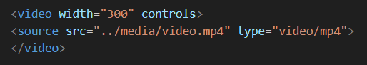

Imagen
Definición:La etiqueta "Imagen" se utiliza para insertar imágenes en una página web.
Sintaxis:
<img src="ruta-imagen" alt="descripcion">
Ejemplo

Uso:Fotografías, Logos, Íconos
Audio
Definición:La etiqueta "audio" permite reproducir archivos de audio en una página web.
Sintaxis:
<audio controls>
<source src="ruta-audio" type="audio/mpeg">
</audio>
Ejemplo
Uso: Música, comentarios de audio o cualquier otro contenido de audio.
Video
DefiniciónLa etiqueta "Video" se usa para insertar videos en una página web.
Sintaxis:
<video controls>
<source src ="video.mp4" type="video/mp4">
/Video>
Ejemplo
Uso: Videos educativos, Tutoriales.
Source
Definición
La etiqueta "Source" se usa dentro de audio o video para especificar la fuente del archivo multimedia.>Sintaxis:
<source src ="archico" type="tipo">
Ejemplo

Uso:Especificar archivos multimedia, Usarse dentro de audio y video.